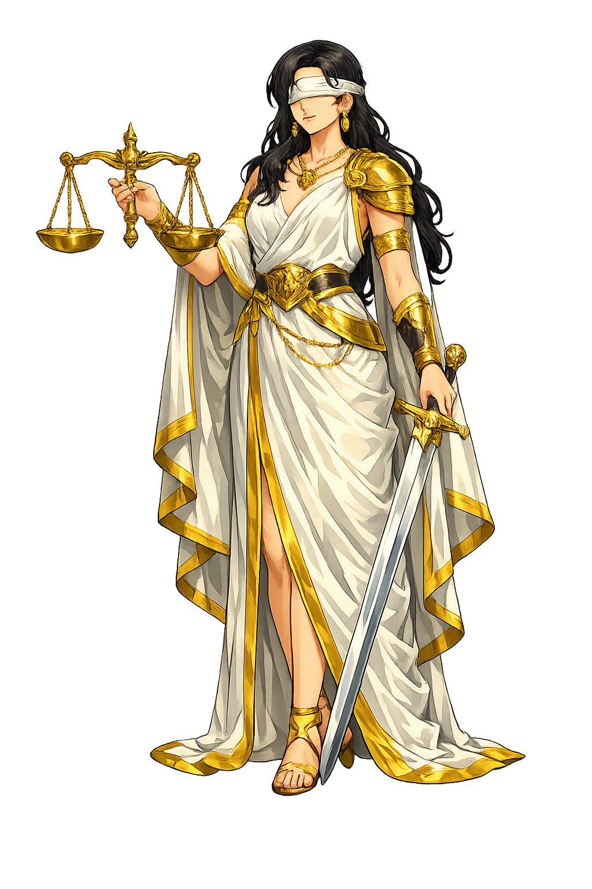

The Living Myth
Divine Law, Order, Custom · A Titaness, the personification of divine order, law, and established custom; a consort of Zeus and mother of the Seasons (Horae) and the Fates (Moirai).

Stories of Thémis
Thémis's myths are myths of legitimacy — who may hold an oracle, who may marry whom, and what order survives a flood. A Titaness of the first generation, she appears wherever the question is not 'what is powerful?' but 'what is right?' Homer swears by her; Aeschylus seats her at Delphi; Pindar makes her save the cosmos with a single prophecy.
Hesiod enrolls Thémis among the twelve Titans — a daughter of Ouranos and Gaia born at the very beginning of the ordered cosmos (Theogony 132–136) — and then gives her the most consequential marriage of the succession. Zeus 'lay with Themis, who bore him the Horae: Good Order (Eunomía), Justice (Díkē), and flourishing Peace (Eirḗnē), who watch over the works of mortal men; and the Moirai, to whom wise Zeus gave the greatest honor' (Theogony 901–906). The pairing is the poem's thesis in miniature: the new Olympian king weds not a war prize but Order itself, and their children are the very forces that make civilized life possible. Even the Fates — sternest of powers — are born of this union, as if destiny itself were part of the design. Through Thémis, Zeus's reign is legitimized: he does not merely conquer the cosmos; he marries its law.
The Pythia opens Aeschylus' Eumenides with a genealogy of her own altar: 'first, in this prayer, I honor Earth, the eldest of the gods, who brought me forth; then Themis, for she, they say, was the next to hold this seat, her daughter as she was; and third, with Themis' good will and none by force, another Titan, Phoebe... gave it as a birthday gift to Phoebus' (1–8). The scene is astonishing in what it omits: no Apollo seizes Delphi — the oracle passes by inheritance and gift, from mother to daughter to sister, until it reaches the god. Athens' most sacred institution is thus traced not to violence but to succession law, and Thémis stands at its center as the first rightful keeper. The trilogy that invents the jury-trial opens, fittingly, with a chain of legitimate title — the oldest property record in Europe is an oracle, and its second owner is Thémis.
All mortal life owed its safety to a piece of advice Thémis once gave Zeus. The sea-goddess Thetis was so beautiful that both Zeus and Poseidon desired her — until, Pindar says (Isthmian 8.26–47), Themis revealed the secret: whoever wed Thetis would father a son stronger than his father. The gods instantly withdrew; Thetis was married off to the mortal Peleus, and her child was Achilles — destined to be 'a warrior son, mightier than his father', as the scholiasts spell out what Pindar leaves implied. Aeschylus assigns the same warning to Themis and Gaia (Prometheus Bound 873–900), Apollodorus (3.13.5) to Themis alone — the sources agree on the prophecy, not on its prophet. Either way, the myth's logic is pure Thémis: the law of succession is the oldest law of all, and even Zeus governs by foresight, not force. The Titaness saves the universe with a single well-timed disclosure.
When Zeus flooded the world and only Deucalion and Pyrrha survived, the couple drifted to Parnassus and climbed to the oracle of Thémis — in Apollodorus' version (1.7.2) they pray to her by name — and ask how the human race might be restored. The goddess answers in a riddle: leave the temple, veil your heads, loosen your robes, and cast 'the bones of your great mother' behind you. Pyrrha blanches at the impiety — until Deucalion decodes it: the Great Mother is Earth, and her bones are stones. They throw the stones; the hard ones become men, the softer ones women. Ovid (Metamorphoses 1.381–415) retells the scene with Thémis presiding — and adds that the new humanity, born of stone, is a tougher breed than the first. The myth gives law an origin story of its own: after the flood, the first thing humanity rebuilds is not fire or shelter but an oracle — the place where right answers come from.
Divine Law
Thémis is divine order — the rightness that exists before anyone legislates it. A Titaness daughter of Ouranos and Gaia, she keeps oracles, mothers the Seasons and the Fates, and counsels Zeus himself. Where her daughters administer what is fated, Thémis personifies what is fitting.
Thémis is what is ordained — custom and right older than any written decree; the noun θέμις meant 'established order' before it was a name.
Before Apollo, Thémis kept the oracle at Delphi, inheriting it from Gaia and passing it on to Phoebe (Aeschylus, Eumenides 1–8).
By Zeus she bore the Seasons — Eunomía (Order), Díkē (Justice), Eirḗnē (Peace) — and the Moirai, the Fates (Hesiod, Theogony 901–906).
She warned Zeus against wedding Thetis, foreseeing a son mightier than his father (Pindar, Isthmian 8.26–47).
From the original script to the living URL
Θέμις
The name in its original Greek form. Thémis (Θέμις) is attested in the source tradition — “A Titaness, the personification of divine order, law, and established custom; a consort of Zeus and mother of the Seasons (Horae) and the Fates (Moirai).”. Its acute accents carry the full phonetic and orthographic weight of the source tradition.
themis
Reduced to plain themis, the name loses everything that made it specific: acute accents. What remains is an ASCII string that machines can parse but that no longer speaks with its original voice.
Thémis
The Unicode restoration recovers what ASCII flattened. Thémis restores acute accents, returning the name to its original written dignity. The domain encodes to Punycode, but the browser displays the truth.
Thémis.com → xn--thmis-csa.com
The non-ASCII characters in Thémis are encoded while the ASCII remains visible. To the DNS, it is Punycode. To humanity, it is Thémis.
Owned, ideal, and ASCII forms of Thémis
Thémis
Restores Θέμις. The full Unicode restoration. thémis.com is not in the PuniCodex collection — it is watched for release; if it drops, this temple upgrades to an owned flagship.
themis
Flattens Θέμις. The plain ASCII fallback — what DNS and legacy systems see.
How Thémis was spoken
How Thémis is preserved in writing
A bespoke provenance study for Thémis is being prepared by the PUNICODEX scholarly team.
Contribute scholarly provenance →Thémis is the most important figure in this lexicon that almost no one remembers. She has no epic adventures, no metamorphoses, no loves. She is simply what is established — the way things are rightly done, before anyone wrote it down. The Greeks could see that custom preceded law, that the unwritten order held where decrees failed, and they gave that order a mother: a Titaness, born before Zeus, honored after him.
Enter Extended Lore